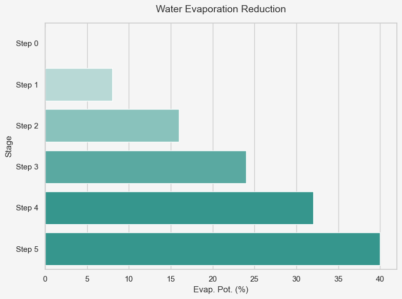

Floating Solar Farms: A Key to Singapore’s Renewable Energy Future
- Solar energy is the most viable renewable option for Singapore due to space constraints; floating solar farms offer a practical solution.
- The cooling effect from water improves efficiency compared to land-based installations.
- Floating solar minimizes land usage conflicts by utilizing water surfaces.
- Floating photovoltaics significantly reduce carbon footprint with lower environmental impact.


- Floating solar systems are modular, scalable, and adaptable to different water bodies.
- Environmental advantages include reduced water evaporation rates and algae growth mitigation.
- Potential ecological challenges include disruption to aquatic ecosystems due to altered temperature and oxygen levels.